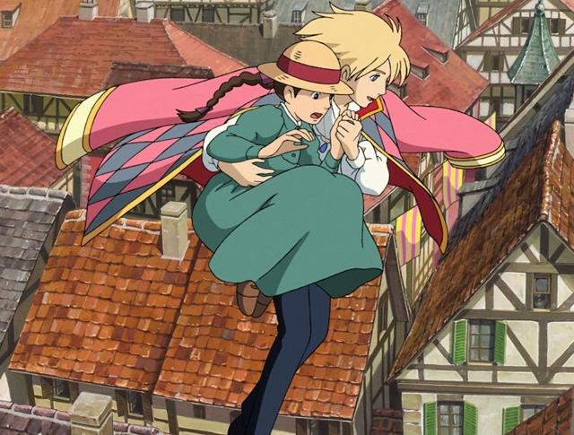
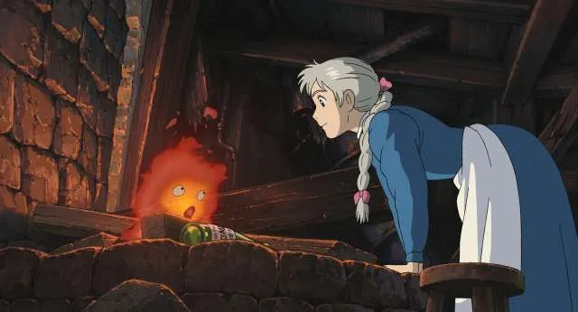
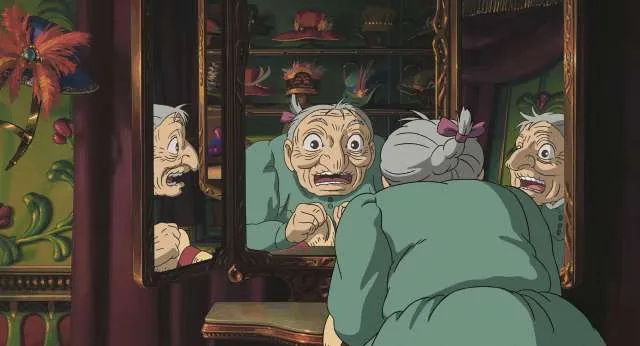

2021年3月25日更新
ciatr編集部
『ハウルの動く城』の謎を徹底考察解説！【ネタバレあり】
© Studio Ghibli/Walt Disney Pictures
イギリスのファンタジー小説、『魔法使いハウルと火の悪魔』を元に製作されたジブリ作品『ハウルの動く城』。未だ根強いファンを持つ本作ですが、実は原作には存在しない物語の追加や、逆に省かれている箇所などが存在します。今回はその謎について徹底解説、考察してみました。
ジブリ映画『ハウルの動く城』の謎とは？
© Studio Ghibli/Walt Disney Pictures
2004年公開の映画『ハウルの動く城』は宮﨑駿が原作小説を元に映画化し、数あるジブリ作品の中でも人気の高い作品として挙げられます。
しがない帽子屋のソフィーは、お祭りの日に兵士にナンパされていたところを魔法使いのハウルに助けられます。しかしハウルを追っていた荒地の魔女のとばっちりで、彼女の容姿は90歳のおばあさんになってしまいました。
帽子屋としてとどまることができない、と感じたソフィーはすぐに家を出ててしまいます。1人歩くソフィーが出会ったのはハウルが住む動く城でした。
そこでソフィーはそこの掃除係として住み込むことになります。城を動かす火の悪魔カルシファーやハウルの弟子のマルクル、ソフィーが助けたかかしのカブとの奇妙な毎日が始まるのでした。
この記事では『ハウルの動く城』の謎や疑問を徹底的に考察、解説してみました！『ハウルの動く城』を鑑賞後に記事を読むことをおすすめします。
無料でTSUTAYA DISCASで観る『ハウルの動く城』あらすじを結末までネタバレ解説
- 激しくなる戦争と魔法をめぐる駆け引き
- 戦争と呪いを終わらせて平和な日々へ
自身の魔法を解く方法を探すソフィーは、ハウルと結んだ契約のせいで城から出られないと嘆くカルシファーから、とある契約を持ちかけられます。それはハウルとの契約をソフィーが解けば、彼女の魔法を解いてくれる、というもの。
ソフィーは取引を受け入れ、忙しくも賑やかな日々を送っていました。しかし国は戦争の最中で、ハウルも戦場に出るようにと国王からの通達が……。
ハウルに代わり宮廷へ向かったソフィーは、王室付き魔法使い・サリマンと対峙しました。ソフィーが力強く啖呵を切ると、その姿が一瞬若返ります。迎えに来たハウルと共に宮廷を抜け出し、サリマンから隠れるために城を移動させました。
ハウルの思い出の花畑へと続く扉をプレゼントされ、なぜか懐かしく感じるソフィー。そんな2人の頭上を戦闘機が通過し、戦火は激しさを増していきました。
ソフィーたちが暮らす町も空襲が始まり、守るものために戦場へ向かうハウル。彼を想いソフィーは城を動かそうとしますが、驚きの事実も判明します。
城の動力源であるカルシファーは、ハウルの心臓そのものだったのです。燃え盛るカルシファーを掴んだ荒地の魔女を救うため、2人に水をかけるソフィー。ハウルが死んでしまうと涙したその瞬間、彼に貰った指輪が光り出しました。
ソフィーに魔法の力があることは描かれていない
© 2004 Studio Ghibli・NDDMT
劇中、ソフィーが老婆になったにもかかわらず突然若返るシーンがいくつか登場します。これについて不思議に思った人もいるのではないでしょうか？
ラストシーンでハウルとカルシファーを無理に引き剥がすシーンも、本来なら双方が死んでしまうはずなのですが、共に命を落とすことはありませんでした。
これらに共通するのは、ソフィーには物に命を吹き込む魔法の力があるということです。映画の中でははっきりと描かれてはいないので、観客に伝わることはありませんでした。なお小説版では、この魔法の力について明確な記述があります。
ソフィーの年齢が突然変わるのは心の現れ
© 2004 Studio Ghibli・NDDMT
突然老婆に変わってしまうソフィーですが、これには隠された答えがありました。
劇中のソフィーの発言はややネガティブさが目立ちます。原作ではソフィーが魔法の力を持っているということを自覚していません。しかし映画の中では曖昧に描かれ、観る人に委ねるような形になっているのです。
人生が悪い方へ動いてしまうのは、悪い魔法をかけられたことだけが原因ではなく、思い込みも影響していると示しています。
既出の老婆になったにもかかわらず、突然若返るシーンが登場するのはそのためです。ソフィー自身がリラックスしているときや眠っているときに若返るのは、その自信のない思い込みから解放された状態になっているから。
宮崎駿は『ハウルの動く城』をただの魔法の物語として製作したのではなく、未来は自分で切り開くことができるのだと、訴求しているのかもしれません。
映画『ハウルの動く城』のヒロインであるソフィーは魔女の呪いで90歳の老婆の姿に変えられてしまいますが、作中時々元の年齢の姿に若返ります。この記事では彼女が若返るきっかけと、そこに込められた”老い”に関するメッセージを考察していきましょう。